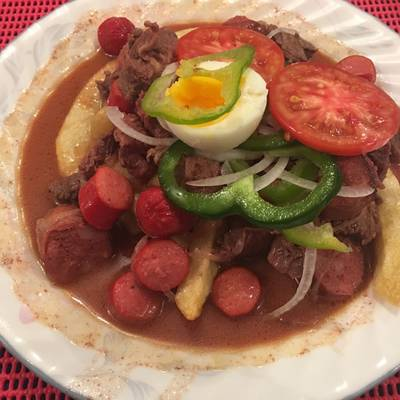

Pique Macho

Ingredients
- 2 veal loins
- 5 vienna-style sausages
- 1/2 purple onion
- 1 green locoto pepper (I used a habanero)
- 1 hard boiled egg
- 2 medium potatoes
- 1 tomato
- 200ml of beer
- 1 tablespoon soy sauce
- black pepper (to taste)
- olive oil for frying/li>
Steps
- First, peel the potatoes and cut them into wedges. We put them to fry in a pan with plenty of olive oil. If we do not have the hard-boiled egg, it is time to cook it too.
- We cut the onion into strips, chop the veal into pieces and the sausages into wheels.
- While the potatoes are frying, put 3 tablespoons of olive oil in a saucepan and sauté the beef along with the onion cut into strips.
- We cover the pan so that the meat releases juices and let it cook for about 2 minutes, stirring a couple of times during this time.
- Now season the meat with black pepper to taste and sprinkle with the soy sauce and the beer. Let cook 5 minutes now uncovered and add the sausages. Cook for another 5 minutes, stirring occasionally.
During this time you have to watch the potatoes. When they are golden brown, remove them to a bowl lined with kitchen paper to drain off any excess oil.
- In a large plate or fountain we mount the pique to the macho. First, we put the chips, then the minced meat with its juices. Then the tomato and pepper cut into slices and lastly, the hard-boiled egg cut into two or four pieces.